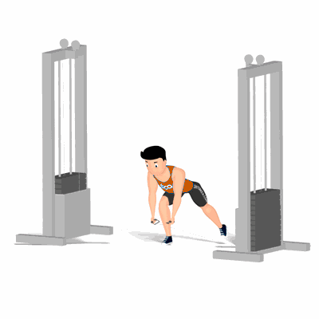

Crucifixo Inverso no Cross Over

Exercício para fortalecimento e hipertrofia dos músculos deltoide, com enfoque na parte posterior. Estimula também, músculos auxiliares do trapézio.
Ficha Técnica
Tipo: Musculação
Grupo Muscular: Ombro
Aparelho: Nenhum
Músculos: Nenhum
Como realizar
- Posicione os puxadores na posição mais baixa do Cross Over, em seguida incline o troco para frente mantendo a coluna reta;
- Posicione uma perna à frente com o joelho flexionado para maior estabilidade e a outra logo atrás de forma estendida;
- Pegue os puxadores da seguinte maneira, puxador esquerdo com a mão direita e puxador direito com a mão esquerda;
- Com os cabos entrelaçados e mantendo os braços estendidos, porém com uma leve flexão dos cotovelos, elevar os braços lateralmente o mais alto que conseguir, concentrando toda a força nos músculos trabalhados;
- Retorne à posição inicial de forma controlada;
- Repita os movimentos.
 RC STORE
RC STORE